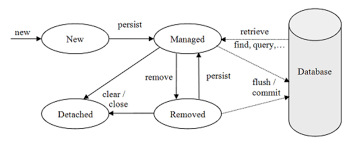
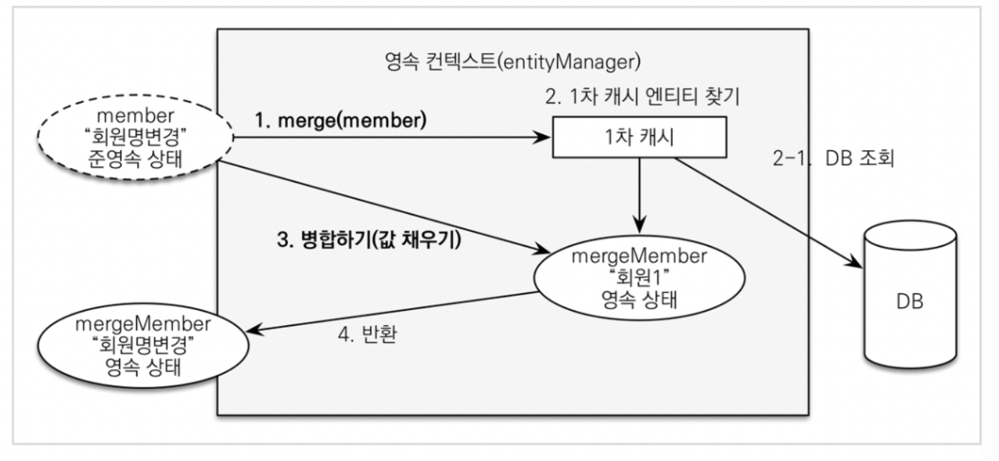

3.1 엔티티 매니저 팩토리와 엔티티 매니저
| EntityManagerFactory | EntityManger |
|---|---|
| 생성 비용 큼 | 생성 비용 작음 |
| 스레드 세이프 | 동시성 문제 존재 |
- EntityManager 는 데이터베이스 연결이 꼭 필요한 시점(
tx.begin())에 pool에서 커넥션을 획득한다.
3.2 영속성 컨텍스트란?
- 엔티티를 영구 저장하는 환경을 의미
- em 으로 엔티티를 조회, 저장 시 영속성 컨텍스트를 사용해 엔티리를 보관하고 관리한다.
em.persist(E)로 엔티티를 영속성 컨텐스트에 저장한다.- 엔티티 매니저가 생성될 때 영속성 컨텍스트는 하나 만들어진다.
- 여러 엔티티 매니저가 같은 영속성 컨텍스트에 접근 가능하다.
3.3 엔티티의 생명 주기

- 비영속; new/tranisent :영속성 컨텍스트와 전혀 관계 없는 상태
new Member()로 순수한 객체 상태일 때
- 영속; managed : 영속성 컨텍스트에 저장된 상태
em.find(), em.persist(E)
- 준영속; detached :영속성 컨텍스트에 저장되었다가 분리된 상태
em.detach(E), em.close(), em.clear()
- 삭제; removed : 삭제된 상태
em.remove(E)
3.4 영속성 컨텍스트의 특징
3.4.1 엔티티 조회
- 1차 캐시 : 영속성 컨텍스트는 내부에 캐시를 가지는 것
| @ID | Entity |
|---|---|
| 1L | member(A) |
| 2L | member(B) |
- 위와 같이 식별자로 캐시하며, 아직 데이터베이스로 flush 되지는 않은 상태이다.
[참고] : [4. 아키텍처](/%EC%B1%85/real%20mysql%201/4.%20%EC%95%84%ED%82%A4%ED%85%8D%EC%B2%98.md#버퍼 풀 플러시)
Jpa 에서 flush 가 되면, DB 에서 또한 캐시를 하기 때문에 바로 HDD 에 기록되진 않는다.
왜냐하면 DB에는 버퍼 풀이 존재해 flush list 를 통해 dirty page 들을 모아 한번에 disk i/o 를 수행하기 떄문이다. (체인지 버퍼도 가능)
즉, JPA의 캐시는 server <-> DB 사이의 네트워크 I/O 를 줄이기 위함 이고 DB 는 Memory <-> Hdd 의 I/O 를 줄이기 위함
- 영속성 컨텍스트는 1 차 캐시를 먼저 조회해 캐시에 존재하는 엔티티를 반환하기 때문에 엔티티의 동일성을 보장한다.
- 영속성 컨텍스트는 Repeatable Read 격리 수준을 어플리케이션 차원에서 제공할 수 있다는 장점이 존재.
3.4.2 엔티티 등록
- 쓰기 지연 (transactional write-behind) : insert Sql 을 transaction 이 commit 직전 까지 내부 저장소에 보관한 후 commit 후에 모아둔 쿼리를 DB 로 전달한다.
3.4.3 엔티티 수정
- 변경 감지 : 엔티티의 변경사항을 자동으로 반영하는 기능
- 영속성 컨텍스트는 영속화된 엔티티의 최초 상태를 스냅샷으로 복사해 저장한다.
tx.commit()이후에, 엔티티 매니저 내부에 flush가 호출된다.- entity가 변경된 사항을 확인하여 update 쿼리를 쓰기 지연 저장소에 저장 후 DB로 flush 및 commit 수행 한다.
- jpa 의 변경 감지로 생성된 update 는 항상 모든 필드를 업데이트 한다.
- 어플리케이션 로딩 시점에 쿼리 로딩 가능
- DB 내부에서 파싱된 쿼리 재사용 가능
- DynamicUpdate, DynamicInsert 로 쿼리를 동적으로 생성해 최적화할 수 있다.
3.4.4 엔티티 삭제
- 삭제 쿼리 또한 쓰기 지연 저장소에 쿼리가 보관되고 commit 시점에 DB로 전달된다.
- 영속성 컨텍스트에서는 바로 삭제되어 가비지 컬렉터에 의해 자동으로 수거된다.
3.5 플러시
- 쓰기 지연 저장소에 저장된 쿼리를 실제 DB에 반영한다. 발생 조건은 아래와 같다.
em.flush로 직접 호출- 트랜잭션 commit 시 자동 호출
- JPQL 쿼리 시 자동 호출
JPQL 은 DB에 SQL로 변환되어 수행되므로 flush 되지 않은 1 차 캐시의 내역들이 조회되지 않는 문제가 발생하기 때문에 JPQL 쿼리전에 flush 가 자동으로 수행된다.
- flush 는 영속성 컨텍스트에 보관된 엔티티를 지우는 것이 아닌 캐시와 DB 간의 동기화를 의미한다.
3.6 준영속
- 영속성 컨텍스트에 있는 엔티티를 영속성 켄텍스트에서 분리하는 작업으로 아래 세자기 메서드 실행 시에 준영속 상태로 변환된다.
3.6.1 엔티티를 준영속 상태로 전환 detach()
em.detach(E)를 사용 시에 영속상태의 엔티티를 영속 컨텍스트에서 관리하지 않게 된다.
3.6.2 영속성 컨텍스트 초기화 clear()
detach()와 반대로 영속성 컨텍스트를 초기화해서 엔티티들이 영속 컨텍스트에서 준영속 상태가된다.
3.6.3 영속성 컨텍스트 종료 close()
- 영속성 컨텍스트를 종료해 엔티티를 모두 준영속 상태로 만든다.
3.6.4 준영속 상태의 특징
- 영속성 컨텍스트의 이점을 누릴 수 없다.
- 1차 캐시 쓰기
- 쓰기 지연
- 변경 감지
- 지연 로딩
- 한번 영속성 컨텍스트에 값이 존재 했기 때문에 식별자 (@Id) 값을 가지고 있다.
- 프록시객체를 로딩해 실제 사용 시에 데이터를 불러오는 지연 로딩을 사용할 수 없다.
3.6.5 병합 merge()

- 준영속 상태의 엔티티를 다시 영속 상태로 변경할 때 사용한다.
- 준영속 엔티티의 식별자 값으로 DB 에서 엔티티를 가져온다.(1차 캐시 부터 확인 하는 작업 존재)
그리고 merge 하는 객체의 값으로 영속 엔티티의 값을 변경한 다음 새로운 영속 엔티티를 반환한다.
영속 엔티티의 값이 변경 되었으므로 변경 감지에 의해 sql 이 쓰기 지연 저장소에 저장되고 commit 시점에 DB에 flush 된다. - 비영속 엔티티 또한 영속 상태로 변환 가능한데, 식별자 값이 존재하지 않기 때문에 DB 에서 조회를 할 수 없어 새로운 엔티티를 생성해서 병합한다.
- 준영속, 비영속 상태에 종속적이지 않으므로 save or update 에 사용